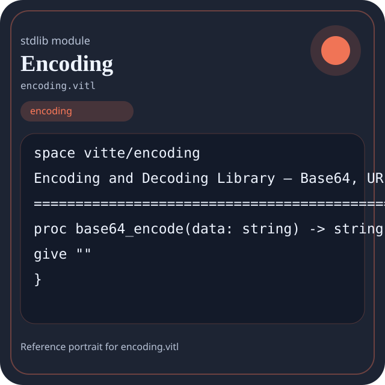

Stdlib module encoding.vitl
This page is a wiki-style reference for one concrete stdlib file. It explains what the file owns, where it fits in the family, and how to decide whether this is the right surface to depend on.

encoding.vitl.Family: encoding
Kind: public stdlib surface
Page style: this reference follows the same “encyclopedic card + portrait + usage contract” logic as the keyword pages, but for stdlib modules.
Summary
- Overview
- Purpose
- Taxonomy
- Implementation profile
- Top-level API inventory
- Position in family
- Declaration map
- Representative signatures
- How to use this module
- User example
- Keyword coverage
- Source shape
- Source landmarks
- Source organization
- Complete API catalog
- Integration boundaries
- Composition guidance
- Relationship table
- Neighbor modules
Overview
| Field | Value |
|---|---|
| Path | encoding.vitl |
| Family | encoding |
| Kind | public stdlib surface |
| Line count | 236 |
| Declared procedures | 53 |
| Declared forms/picks | 0 |
`encoding.vitl` is a public stdlib surface inside the `encoding` family. It should be read as one focused slice of the broader family responsibility: Text and byte encoding surfaces such as utf, base64, url, hex, html, legacy encodings, and unicode helpers.
Purpose
This file should be chosen because of responsibility, not because its name “sounds close enough”. Inside the encoding family, it carries one focused part of the contract and keeps that responsibility separate from neighboring concerns.
- A JSON payload can be rendered first, then base64-encoded for transport.
- A path or URL can be normalized before joining it with host-facing code.
Taxonomy
Think of this page as a generated encyclopedia entry rather than a hand-written tutorial. The goal is to show what kind of module this is, how dense it is, and what reading strategy makes sense before depending on it.
- Large algorithm surface: this file exposes many procedures and likely acts as a domain toolkit rather than a single thin wrapper.
- Has tuning constants: part of the module behavior is controlled by named constants that document default precision, limits, or policy.
- Minimal top-level dependencies: the module reads as mostly self-contained from its opening declarations.
- Explicit export surface: the file ends with visible export declarations instead of relying only on implicit namespace discovery.
Implementation profile
This profile is inferred directly from the source text. It does not replace reading the file, but it tells you quickly whether the module is mostly declarative, loop-heavy, branch-heavy, or organized around many small exits.
| Signal | Count | What it suggests |
|---|---|---|
if | 0 | Branching density and local decision-making. |
while | 0 | Loop-heavy or iterative implementation style. |
for | 0 | Collection-style traversal at source level. |
match | 0 | Variant-driven branching or grammar-style decoding. |
let | 0 | Local state and intermediate value density. |
give | 53 | Number of explicit exit points and result shaping. |
Top-level API inventory
| Surface | Items |
|---|---|
| Procedures | base64_encode, base64_decode, base64_encode_url_safe, base64_decode_url_safe, hex_encode, hex_decode, hex_encode_uppercase, hex_encode_lowercase, url_encode, url_decode, url_encode_component, url_decode_component |
| Forms | none declared at top level |
| Picks | none declared at top level |
| Constants | UNICODE_NFC, UNICODE_NFD, UNICODE_NFKC, UNICODE_NFKD |
| Exports | * |
Imported surfaces
This file does not advertise a top-level `use` surface in its opening declarations. That often means it is either self-contained or an aggregation layer.
Position in family
This file is module 1 of 9 in the encoding family when ordered by path. By procedure count it ranks 1, and by line count it ranks 1. Those ranks are useful as rough signals of breadth, not as quality judgments.
Declaration map
The declaration map turns raw source into a scan-friendly catalog. It is useful when the file is large enough that a reader wants to orient by kinds of surfaces first.
| Line | Name | Kind | Role |
|---|---|---|---|
| 1 | vitte/encoding | space | Declares the namespace that anchors this file in the stdlib tree. |
| 8 | base64_encode | proc | Turns internal values into a transport or textual representation. |
| 12 | base64_decode | proc | Transforms an input representation into a structured internal value. |
| 16 | base64_encode_url_safe | proc | Turns internal values into a transport or textual representation. |
| 20 | base64_decode_url_safe | proc | Transforms an input representation into a structured internal value. |
| 25 | hex_encode | proc | Turns internal values into a transport or textual representation. |
| 29 | hex_decode | proc | Transforms an input representation into a structured internal value. |
| 33 | hex_encode_uppercase | proc | Turns internal values into a transport or textual representation. |
| 37 | hex_encode_lowercase | proc | Turns internal values into a transport or textual representation. |
| 42 | url_encode | proc | Turns internal values into a transport or textual representation. |
| 46 | url_decode | proc | Transforms an input representation into a structured internal value. |
| 50 | url_encode_component | proc | Turns internal values into a transport or textual representation. |
| 54 | url_decode_component | proc | Transforms an input representation into a structured internal value. |
| 58 | url_query_escape | proc | Represents one top-level surface in the file contract and should be read as part of the module boundary. |
| 62 | url_query_unescape | proc | Represents one top-level surface in the file contract and should be read as part of the module boundary. |
| 67 | html_escape | proc | Represents one top-level surface in the file contract and should be read as part of the module boundary. |
| 71 | html_unescape | proc | Represents one top-level surface in the file contract and should be read as part of the module boundary. |
| 75 | xml_escape | proc | Represents one top-level surface in the file contract and should be read as part of the module boundary. |
| 79 | xml_unescape | proc | Represents one top-level surface in the file contract and should be read as part of the module boundary. |
| 83 | cdata_escape | proc | Represents one top-level surface in the file contract and should be read as part of the module boundary. |
| 88 | utf8_encode | proc | Turns internal values into a transport or textual representation. |
| 92 | utf8_decode | proc | Transforms an input representation into a structured internal value. |
| 96 | utf8_is_valid | proc | Represents one top-level surface in the file contract and should be read as part of the module boundary. |
| 100 | utf8_length | proc | Represents one top-level surface in the file contract and should be read as part of the module boundary. |
| 104 | utf8_byte_length | proc | Represents one top-level surface in the file contract and should be read as part of the module boundary. |
| 108 | utf8_char_at | proc | Represents one top-level surface in the file contract and should be read as part of the module boundary. |
| 112 | utf8_substring | proc | Represents one top-level surface in the file contract and should be read as part of the module boundary. |
| 117 | utf16_encode | proc | Turns internal values into a transport or textual representation. |
| 121 | utf16_decode | proc | Transforms an input representation into a structured internal value. |
| 125 | utf16_to_utf8 | proc | Represents one top-level surface in the file contract and should be read as part of the module boundary. |
| 129 | utf8_to_utf16 | proc | Represents one top-level surface in the file contract and should be read as part of the module boundary. |
| 134 | utf32_encode | proc | Turns internal values into a transport or textual representation. |
| 138 | utf32_decode | proc | Transforms an input representation into a structured internal value. |
| 143 | UNICODE_NFC | const | Defines a named constant reused across the module. |
| 144 | UNICODE_NFD | const | Defines a named constant reused across the module. |
| 145 | UNICODE_NFKC | const | Defines a named constant reused across the module. |
| 146 | UNICODE_NFKD | const | Defines a named constant reused across the module. |
| 148 | unicode_normalize | proc | Represents one top-level surface in the file contract and should be read as part of the module boundary. |
| 152 | unicode_is_normalized | proc | Represents one top-level surface in the file contract and should be read as part of the module boundary. |
| 157 | char_code_point | proc | Represents one top-level surface in the file contract and should be read as part of the module boundary. |
| 161 | code_point_to_char | proc | Represents one top-level surface in the file contract and should be read as part of the module boundary. |
| 165 | is_valid_code_point | proc | Represents one top-level surface in the file contract and should be read as part of the module boundary. |
| 169 | upcase_unicode | proc | Represents one top-level surface in the file contract and should be read as part of the module boundary. |
| 173 | downcase_unicode | proc | Represents one top-level surface in the file contract and should be read as part of the module boundary. |
| 177 | title_case_unicode | proc | Represents one top-level surface in the file contract and should be read as part of the module boundary. |
| 182 | has_bom | proc | Represents one top-level surface in the file contract and should be read as part of the module boundary. |
| 186 | add_bom_utf8 | proc | Represents one top-level surface in the file contract and should be read as part of the module boundary. |
| 190 | add_bom_utf16 | proc | Represents one top-level surface in the file contract and should be read as part of the module boundary. |
| 194 | remove_bom | proc | Represents one top-level surface in the file contract and should be read as part of the module boundary. |
| 199 | detect_encoding | proc | Represents one top-level surface in the file contract and should be read as part of the module boundary. |
| 203 | detect_encoding_confidence | proc | Represents one top-level surface in the file contract and should be read as part of the module boundary. |
| 207 | convert_encoding | proc | Represents one top-level surface in the file contract and should be read as part of the module boundary. |
| 212 | punycode_encode | proc | Turns internal values into a transport or textual representation. |
| 216 | punycode_decode | proc | Transforms an input representation into a structured internal value. |
| 221 | quote_printable_encode | proc | Turns internal values into a transport or textual representation. |
| 225 | quote_printable_decode | proc | Transforms an input representation into a structured internal value. |
| 229 | uuencode | proc | Represents one top-level surface in the file contract and should be read as part of the module boundary. |
| 233 | uudecode | proc | Represents one top-level surface in the file contract and should be read as part of the module boundary. |
The table is exhaustive for top-level declarations of the selected kinds. This file declares 58 matching surfaces.
Representative signatures
These signatures are shown in source order so the page keeps the feel of a reference manual, not just a keyword cloud.
proc base64_encode(data: string) -> string {(line 8)proc base64_decode(data: string) -> string {(line 12)proc base64_encode_url_safe(data: string) -> string {(line 16)proc base64_decode_url_safe(data: string) -> string {(line 20)proc hex_encode(data: string) -> string {(line 25)proc hex_decode(data: string) -> string {(line 29)proc hex_encode_uppercase(data: string) -> string {(line 33)proc hex_encode_lowercase(data: string) -> string {(line 37)proc url_encode(text_value: string) -> string {(line 42)proc url_decode(text_value: string) -> string {(line 46)proc url_encode_component(text_value: string) -> string {(line 50)proc url_decode_component(text_value: string) -> string {(line 54)proc url_query_escape(text_value: string) -> string {(line 58)proc url_query_unescape(text_value: string) -> string {(line 62)proc html_escape(text_value: string) -> string {(line 67)proc html_unescape(text_value: string) -> string {(line 71)proc xml_escape(text_value: string) -> string {(line 75)proc xml_unescape(text_value: string) -> string {(line 79)
The list is intentionally capped here; the source file declares 57 matching signatures in total.
How to use this module
Start by reading the file as an ownership boundary. Ask three questions: what enters this module, what stable types or procedures it exports, and what adjacent module should stay outside of it.
- Read
spaceand top-level imports first so the ownership boundary ofencoding.vitlis explicit. - Scan constants before procedures; they often encode precision, limits, or policy assumptions that explain later behavior.
- Traverse procedures in source order; the early helpers usually explain the naming and numeric conventions used later.
- Use the source landmarks section below as a table of contents when the file is large.
- Only after that compare neighbor modules, because the right boundary choice matters more than memorizing one helper name.
User example
This example is generated from the actual stdlib module surface. Its job is not to be the smallest snippet possible; its job is to show a realistic consumer-shaped file that exercises the module and mirrors the language keywords the module itself relies on.
space demo/encoding
const SAMPLE_LABEL: string = "demo"
proc run_example() -> string {
let stable: bool = ready and true
give "ok"
}
export run_exampleKeyword coverage
This table makes the “all keywords of the module” requirement auditable. It compares the detected Vitte keywords in the source file with the generated consumer example above.
| Keyword | Present in module source | Used in generated user example |
|---|---|---|
space | yes | yes |
const | yes | yes |
proc | yes | yes |
give | yes | yes |
export | yes | yes |
and | yes | yes |
The generated snippet exercises every detected Vitte keyword used by this module.
Source shape
space vitte/encoding
proc base64_encode(data: string) -> string {
give ""
}
proc base64_decode(data: string) -> string {
give ""
}
proc base64_encode_url_safe(data: string) -> string {
give ""
}The excerpt is not meant to replace the file. It exists to make the module recognizable at first glance, the same way a Wikipedia infobox helps the reader orient before reading the whole article.
Source landmarks
Large files are easier to retain when they have visible landmarks. When the source contains explicit section banners, they are surfaced here; otherwise the first major declarations are used as anchors.
- Encoding and Decoding Library — Base64, URL, Unicode
Source organization
When a file carries its own internal chaptering, those chapters usually reveal the intended reading order better than a flat symbol list. This section reconstructs that organization from the source itself.
Opening declarations
Top-level items: 1. Procedures: 0. Data surfaces: 0. Constants: 0.
First visible names: vitte/encoding
Encoding and Decoding Library — Base64, URL, Unicode
Top-level items: 58. Procedures: 53. Data surfaces: 0. Constants: 4.
First visible names: base64_encode, base64_decode, base64_encode_url_safe, base64_decode_url_safe, hex_encode, hex_decode, hex_encode_uppercase, hex_encode_lowercase, url_encode, url_decode
Complete API catalog
This catalog is the exhaustive file-level index for the module. It is intentionally closer to a generated encyclopedia appendix than to a tutorial summary.
Constants
| Line | Name | Signature | Role |
|---|---|---|---|
| 143 | UNICODE_NFC | const UNICODE_NFC: i32 = 1 | Defines a named constant reused across the module. |
| 144 | UNICODE_NFD | const UNICODE_NFD: i32 = 2 | Defines a named constant reused across the module. |
| 145 | UNICODE_NFKC | const UNICODE_NFKC: i32 = 3 | Defines a named constant reused across the module. |
| 146 | UNICODE_NFKD | const UNICODE_NFKD: i32 = 4 | Defines a named constant reused across the module. |
Procedures
| Line | Name | Signature | Role |
|---|---|---|---|
| 8 | base64_encode | proc base64_encode(data: string) -> string { | Turns internal values into a transport or textual representation. |
| 12 | base64_decode | proc base64_decode(data: string) -> string { | Transforms an input representation into a structured internal value. |
| 16 | base64_encode_url_safe | proc base64_encode_url_safe(data: string) -> string { | Turns internal values into a transport or textual representation. |
| 20 | base64_decode_url_safe | proc base64_decode_url_safe(data: string) -> string { | Transforms an input representation into a structured internal value. |
| 25 | hex_encode | proc hex_encode(data: string) -> string { | Turns internal values into a transport or textual representation. |
| 29 | hex_decode | proc hex_decode(data: string) -> string { | Transforms an input representation into a structured internal value. |
| 33 | hex_encode_uppercase | proc hex_encode_uppercase(data: string) -> string { | Turns internal values into a transport or textual representation. |
| 37 | hex_encode_lowercase | proc hex_encode_lowercase(data: string) -> string { | Turns internal values into a transport or textual representation. |
| 42 | url_encode | proc url_encode(text_value: string) -> string { | Turns internal values into a transport or textual representation. |
| 46 | url_decode | proc url_decode(text_value: string) -> string { | Transforms an input representation into a structured internal value. |
| 50 | url_encode_component | proc url_encode_component(text_value: string) -> string { | Turns internal values into a transport or textual representation. |
| 54 | url_decode_component | proc url_decode_component(text_value: string) -> string { | Transforms an input representation into a structured internal value. |
| 58 | url_query_escape | proc url_query_escape(text_value: string) -> string { | Represents one top-level surface in the file contract and should be read as part of the module boundary. |
| 62 | url_query_unescape | proc url_query_unescape(text_value: string) -> string { | Represents one top-level surface in the file contract and should be read as part of the module boundary. |
| 67 | html_escape | proc html_escape(text_value: string) -> string { | Represents one top-level surface in the file contract and should be read as part of the module boundary. |
| 71 | html_unescape | proc html_unescape(text_value: string) -> string { | Represents one top-level surface in the file contract and should be read as part of the module boundary. |
| 75 | xml_escape | proc xml_escape(text_value: string) -> string { | Represents one top-level surface in the file contract and should be read as part of the module boundary. |
| 79 | xml_unescape | proc xml_unescape(text_value: string) -> string { | Represents one top-level surface in the file contract and should be read as part of the module boundary. |
| 83 | cdata_escape | proc cdata_escape(text_value: string) -> string { | Represents one top-level surface in the file contract and should be read as part of the module boundary. |
| 88 | utf8_encode | proc utf8_encode(code_point: i32) -> string { | Turns internal values into a transport or textual representation. |
| 92 | utf8_decode | proc utf8_decode(encoded: string) -> i32 { | Transforms an input representation into a structured internal value. |
| 96 | utf8_is_valid | proc utf8_is_valid(text_value: string) -> int { | Represents one top-level surface in the file contract and should be read as part of the module boundary. |
| 100 | utf8_length | proc utf8_length(text_value: string) -> i32 { | Represents one top-level surface in the file contract and should be read as part of the module boundary. |
| 104 | utf8_byte_length | proc utf8_byte_length(text_value: string) -> i32 { | Represents one top-level surface in the file contract and should be read as part of the module boundary. |
| 108 | utf8_char_at | proc utf8_char_at(text_value: string, index: i32) -> i32 { | Represents one top-level surface in the file contract and should be read as part of the module boundary. |
| 112 | utf8_substring | proc utf8_substring(text_value: string, start: i32, end: i32) -> string { | Represents one top-level surface in the file contract and should be read as part of the module boundary. |
| 117 | utf16_encode | proc utf16_encode(code_point: i32) -> string { | Turns internal values into a transport or textual representation. |
| 121 | utf16_decode | proc utf16_decode(encoded: string) -> i32 { | Transforms an input representation into a structured internal value. |
| 125 | utf16_to_utf8 | proc utf16_to_utf8(text_value: string) -> string { | Represents one top-level surface in the file contract and should be read as part of the module boundary. |
| 129 | utf8_to_utf16 | proc utf8_to_utf16(text_value: string) -> string { | Represents one top-level surface in the file contract and should be read as part of the module boundary. |
| 134 | utf32_encode | proc utf32_encode(code_point: i32) -> string { | Turns internal values into a transport or textual representation. |
| 138 | utf32_decode | proc utf32_decode(encoded: string) -> i32 { | Transforms an input representation into a structured internal value. |
| 148 | unicode_normalize | proc unicode_normalize(text_value: string, normalization_form: i32) -> string { | Represents one top-level surface in the file contract and should be read as part of the module boundary. |
| 152 | unicode_is_normalized | proc unicode_is_normalized(text_value: string, normalization_form: i32) -> int { | Represents one top-level surface in the file contract and should be read as part of the module boundary. |
| 157 | char_code_point | proc char_code_point(ch: i32) -> i32 { | Represents one top-level surface in the file contract and should be read as part of the module boundary. |
| 161 | code_point_to_char | proc code_point_to_char(code: i32) -> i32 { | Represents one top-level surface in the file contract and should be read as part of the module boundary. |
| 165 | is_valid_code_point | proc is_valid_code_point(code: i32) -> int { | Represents one top-level surface in the file contract and should be read as part of the module boundary. |
| 169 | upcase_unicode | proc upcase_unicode(text_value: string) -> string { | Represents one top-level surface in the file contract and should be read as part of the module boundary. |
| 173 | downcase_unicode | proc downcase_unicode(text_value: string) -> string { | Represents one top-level surface in the file contract and should be read as part of the module boundary. |
| 177 | title_case_unicode | proc title_case_unicode(text_value: string) -> string { | Represents one top-level surface in the file contract and should be read as part of the module boundary. |
| 182 | has_bom | proc has_bom(data: string) -> int { | Represents one top-level surface in the file contract and should be read as part of the module boundary. |
| 186 | add_bom_utf8 | proc add_bom_utf8(text_value: string) -> string { | Represents one top-level surface in the file contract and should be read as part of the module boundary. |
| 190 | add_bom_utf16 | proc add_bom_utf16(text_value: string) -> string { | Represents one top-level surface in the file contract and should be read as part of the module boundary. |
| 194 | remove_bom | proc remove_bom(text_value: string) -> string { | Represents one top-level surface in the file contract and should be read as part of the module boundary. |
| 199 | detect_encoding | proc detect_encoding(data: string) -> string { | Represents one top-level surface in the file contract and should be read as part of the module boundary. |
| 203 | detect_encoding_confidence | proc detect_encoding_confidence(data: string) -> f64 { | Represents one top-level surface in the file contract and should be read as part of the module boundary. |
| 207 | convert_encoding | proc convert_encoding(data: string, from_enc: string, to_enc: string) -> string { | Represents one top-level surface in the file contract and should be read as part of the module boundary. |
| 212 | punycode_encode | proc punycode_encode(text_value: string) -> string { | Turns internal values into a transport or textual representation. |
| 216 | punycode_decode | proc punycode_decode(text_value: string) -> string { | Transforms an input representation into a structured internal value. |
| 221 | quote_printable_encode | proc quote_printable_encode(data: string) -> string { | Turns internal values into a transport or textual representation. |
| 225 | quote_printable_decode | proc quote_printable_decode(data: string) -> string { | Transforms an input representation into a structured internal value. |
| 229 | uuencode | proc uuencode(data: string) -> string { | Represents one top-level surface in the file contract and should be read as part of the module boundary. |
| 233 | uudecode | proc uudecode(data: string) -> string { | Represents one top-level surface in the file contract and should be read as part of the module boundary. |
Exports
| Line | Name | Signature | Role |
|---|---|---|---|
| 236 | * | export * | Re-exports surfaces that the module wants to expose as part of its public boundary. |
Integration boundaries
Within encoding, this file should remain focused. If a future helper changes the host boundary, scheduling boundary, or data-shape boundary, it probably belongs in a neighbor module instead of being added here by convenience.
- Family responsibility: Text and byte encoding surfaces such as utf, base64, url, hex, html, legacy encodings, and unicode helpers.
- Family architecture role: Use `encoding` when values cross a textual or byte-oriented boundary and representation matters.
Composition guidance
Choose this module when
- Choose
encoding.vitlwhen the main question is owned by this module rather than by transport, storage, orchestration, or user-interface code. - A JSON payload can be rendered first, then base64-encoded for transport.
- A path or URL can be normalized before joining it with host-facing code.
Pause before extending it when
- Avoid extending this file when the new helper mostly changes the boundary to host I/O, runtime coordination, or foreign integration instead of staying inside
encoding. - Check nearby modules such as
encoding/base64.vitl,encoding/hex.vitl,encoding/html.vitlbefore adding convenience wrappers here.
Relationship table
This table keeps the page closer to a real encyclopedia entry: a module is easier to understand when compared with its nearest alternatives in the same family.
| Neighbor | Procedures | Data surfaces | Why compare it |
|---|---|---|---|
encoding/base64.vitl | 4 | 0 | Shares the same family boundary but carries a distinct slice of responsibility. |
encoding/hex.vitl | 4 | 0 | Shares the same family boundary but carries a distinct slice of responsibility. |
encoding/html.vitl | 7 | 0 | Shares the same family boundary but carries a distinct slice of responsibility. |
encoding/legacy.vitl | 7 | 0 | Shares the same family boundary but carries a distinct slice of responsibility. |
encoding/unicode.vitl | 8 | 0 | Shares the same family boundary but carries a distinct slice of responsibility. |
encoding/url.vitl | 5 | 0 | Shares the same family boundary but carries a distinct slice of responsibility. |
encoding/utf.vitl | 13 | 0 | Shares the same family boundary but carries a distinct slice of responsibility. |
encoding/utf8.vitl | 4 | 0 | Shares the same family boundary but carries a distinct slice of responsibility. |